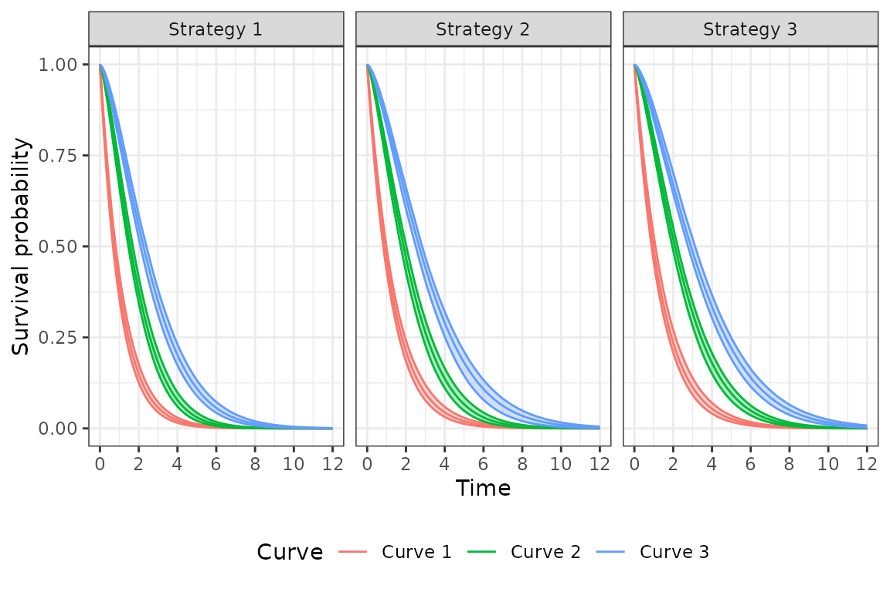
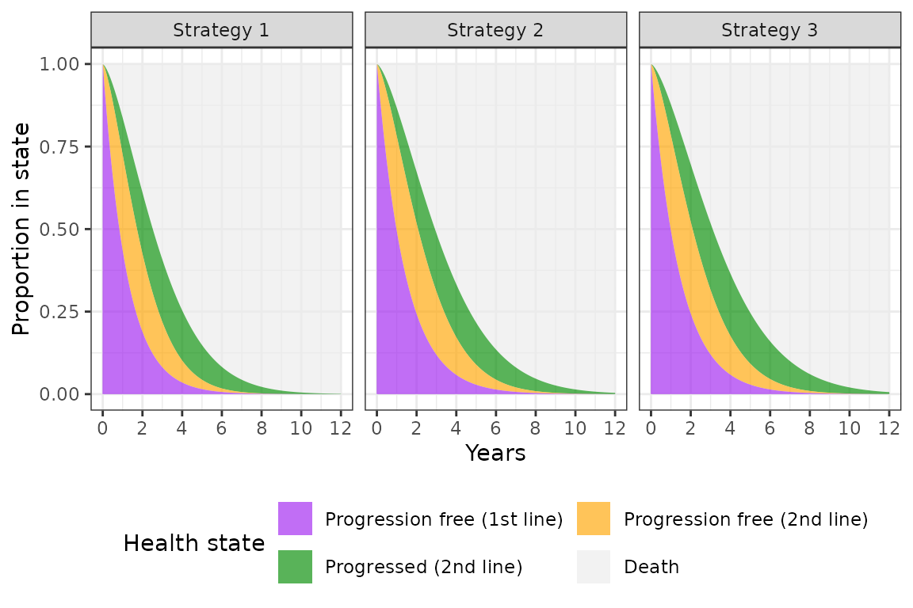

An N-state partitioned survival model (PSM) simulates the probability that a patient is in each of N distinct health states at a given point of time when treated by a particular therapy. State membership is estimated from a set of non-mutually exclusive survival curves; for an N-state model, N-1 survival curves are required.
The cumulative survival function, , represents the probability that a patient survives to health state or to a lower indexed state beyond time . The probability that a patient is in health state 1 is always just . State membership in health states is calculated as . Finally, the probability of being in the final health state (i.e., the dead state) is , or one minus the overall survival curve.
In hesim, an N-state PSM consists of three types of
separate statistical models: a set of N-1 survival models, a model of
the utility values to assign to each health state, and a set of models
for costs to assign to each health state. Multiple cost models can be
used to categorize costs into different categories (e.g., costs of
medical care, drug costs). All models can either be fit using R or
constructed with external data.
Separate survival curves as a function of time,
,
are predicted for each treatment strategy
and patient
as a function of
parameters,
,
which can depend on covariates,
(see params_surv() for more details),
Quality-adjusted life-years (QALYs) and total costs associated with a given health state for a given treatment strategy and patient are calculated by integrating the “weighted” probability of survival, where weights are a function of the discount factor and predicted state values. Letting index a health state, QALYs and total costs for the th cost category are calculated as,
$$ \begin{aligned} \rm{QALYs}_{hik} &= \int_{0}^{T} q_{hik}(t) e^{-rt} p_{hik}(t)dt, \\ \rm{Costs}_{m,hik} &= \int_{0}^{T} c_{m,hik}(t) e^{-rt} p_{hik}(t)dt, \end{aligned} $$ where is a quality-of-life weight, is (assuming that time is measured in years) annualized costs, is the discount rate, and is the probability of being in a given health state at a given time, and QALYs and costs are calculated over time periods.
To illustrate a partitioned survival analysis, consider the evaluation of a two-line sequential treatment strategy in oncology using a 4-state PSM. The 4 health states might be:
We begin by defining the population, treatment strategies, and model
structure. In this example, we model three treatment strategies, three
distinct patients (that differ in age and gender), and four health
states (death and three non-death states). This information is combined
using hesim_data(), which creates a general object of class
hesim_data.
library("data.table")
library("hesim")
set.seed(101)
strategies <- data.table(strategy_id = c(1, 2, 3),
strategy_name = paste0("Strategy ", 1:3))
patients <- data.table(patient_id = seq(1, 3),
age = c(45, 50, 60),
female = c(0, 0, 1))
states <- data.frame(state_id = seq(1, 3),
state_name = c("Progression free (1st line)",
"Progression free (2nd line)",
"Progressed (2nd line)"),
stringsAsFactors = FALSE)
hesim_dat <- hesim_data(strategies = strategies,
patients = patients,
states = states)
print(hesim_dat)## $strategies
## strategy_id strategy_name
## <num> <char>
## 1: 1 Strategy 1
## 2: 2 Strategy 2
## 3: 3 Strategy 3
##
## $patients
## patient_id age female
## <int> <num> <num>
## 1: 1 45 0
## 2: 2 50 0
## 3: 3 60 1
##
## $states
## state_id state_name
## 1 1 Progression free (1st line)
## 2 2 Progression free (2nd line)
## 3 3 Progressed (2nd line)
##
## attr(,"class")
## [1] "hesim_data"We use get_labels() to obtain nice labels for plots and
summary tables.
labs <- get_labels(hesim_dat)
print(labs)## $strategy_id
## Strategy 1 Strategy 2 Strategy 3
## 1 2 3
##
## $state_id
## Progression free (1st line) Progression free (2nd line)
## 1 2
## Progressed (2nd line) Death
## 3 4The parameters of the survival models would typically be estimated in one of two ways. First, if access to patient level data from a clinical trial were available, survival models would be fit using available R packages. Second, a formal evidence synthesis—such as a network meta-analysis—might be conducted. Here, we provide an example of an analysis with trial level data.
We consider an estimation dataset (surv_est_data) with
three survival endpoints with endpoint 1 denoting the lowest indexed
state, endpoint 2 the next indexed state, and endpoint 3 representing
overall survival. In our example, endpoint 1 represents progression on
1st line treatment, endpoint 2 represents progression on 2nd line
treatment, and endpoint 3 represents death.
Survival models in hesim can be fit using either
flexsurvreg or flexsurvspline from the
flexsurv package. hesim currently supports
parametric (exponential, Weibull, Gompertz, gamma, log-logistic,
lognormal, and generalized gamma), splines, and fractional polynomial
survival models (see params_surv).
In this example, we fit a Weibull model to each of the three survival
endpoints.
library("flexsurv")
surv_est_data <- psm4_exdata$survival
fit1 <- flexsurvreg(Surv(endpoint1_time, endpoint1_status) ~ age + female +
factor(strategy_id),
data = surv_est_data,
dist = "weibull")
fit2 <- flexsurvreg(Surv(endpoint2_time, endpoint2_status) ~ age + female +
factor(strategy_id),
data = surv_est_data,
dist = "weibull")
fit3 <- flexsurvreg(Surv(endpoint3_time, endpoint3_status) ~ age + female +
factor(strategy_id),
data = surv_est_data,
dist = "weibull")
psfit_wei <- flexsurvreg_list(fit1, fit2, fit3)Although utility and cost models can be fit using regression models,
in many cases, we won’t fit a model directly, but will use estimated
mean values from published sources. In this case, we can use a
stateval_tbl() to store estimates. For instance, consider
an example where we are only given a range of values for utility and we
therefore approximate the posterior distribution of mean utility values
by health state using a uniform distribution.
utility_tbl <- stateval_tbl(tbl = data.frame(state_id = states$state_id,
min = psm4_exdata$utility$lower,
max = psm4_exdata$utility$upper),
dist = "unif")Similar to utility, we will not simulate drug costs based on a statistical model but will instead use published estimates. Drug costs will only vary by treatment strategy (i.e., they do not vary by health state or across samples in the PSA).
drugcost_tbl <- stateval_tbl(tbl = data.frame(strategy_id = strategies$strategy_id,
est = psm4_exdata$costs$drugs$costs),
dist = "fixed")For cases in which we want to use a regression model to simulate
costs, hesim supports parameterizing a cost or utility
model using linear models. Here, we fit a model for medical costs as a
function of the three non-death health states using the
lm() function in R.
medcosts_fit <- lm(costs ~ female + state_name, data = psm4_exdata$costs$medical)A PSM in hesim is an R6 object of class
Psm and comprises of three separate submodels: (1) a set of
survival models for generating survival curves (of class
PsmCurves), (2) a utility model (of class
StateVals), and (3) a set of cost models for each cost
component (a list of StateVals objects). Since analyses in
hesim are, by default, based on sampled values of the
parameters from their joint posterior distribution in order to
facilitate probabilistic sensitivity analysis (PSA), we will specify the
number of sampled parameter sets that are desired.
n_samples <- 100Survival curves are simulated using PsmCurves objects.
We can create a PsmCurves object using
create_PsmCurves() as a function of our fitted Weibull
models and input data describing the target population and treatment
strategies.
To conduct the PSA, we must sample random draws of the regression
coefficients from suitable probability distribution, which can be done
in one of two ways. First, the parameters of each survival model can be
sampled separately using a multivariate normal distribution. However,
this option does not preserve the correlation in the survival endpoints.
By default, create_PsmCurves() consequently samples the
parameters via bootstrapping, whereby the survival models are refit
repeatedly to resamples of the estimation dataset.
surv_input_data <- expand(hesim_dat, by = c("strategies", "patients"))
survmods <- create_PsmCurves(psfit_wei, input_data = surv_input_data, n = n_samples,
uncertainty = "bootstrap", est_data = surv_est_data)Utility and cost values are simulated using models of class
StateVals. We can instantiate a StateVals
object from a ’stateval_tbl` object, which creates a “mean model” that
predicts mean state values for each treatment strategy, patient, and
health state combination. In the utility model, utility only varies
across health states and is constant within patients and treatment
strategies conditional on health state.
utilitymod <- create_StateVals(utility_tbl, n = n_samples, hesim_data = hesim_dat)We take a similar approach for drug costs, in which costs only vary across treatment strategies.
drugcostmod <- create_StateVals(drugcost_tbl, n = n_samples, hesim_data = hesim_dat)Finally, we can also instantiate a StateVals() from a
fitted linear model and a corresponding dataset of class
expanded_hesim_data.
medcost_data <- expand(hesim_dat, by = c("strategies", "patients", "states"))
medcostmod <- create_StateVals(medcosts_fit, input_data = medcost_data,
n = n_samples)Survival curves are predicted by treatment strategy and patient with
the function $sim_survival(). We can quickly generate a
plot of survival curves (averaged across patients) by treatment strategy
using autoplot.survival().
## sample strategy_id patient_id grp_id curve t survival
## <num> <int> <int> <int> <num> <num> <num>
## 1: 1 1 1 1 1 0.0 1.0000000
## 2: 1 1 1 1 1 0.1 0.9189061
## 3: 1 1 1 1 1 0.2 0.8411512
## 4: 1 1 1 1 1 0.3 0.7688137
## 5: 1 1 1 1 1 0.4 0.7019982
## 6: 1 1 1 1 1 0.5 0.6405107
# Plot
library("ggplot2")
labs$curve <- c("Curve 1" = 1, "Curve 2" = 2, "Curve 3" = 3)
autoplot(psm$survival_, labels = labs,
ci = TRUE, ci_style = "ribbon") +
scale_x_continuous(breaks = seq(0, max(times), 2))
After simulating survival, we can calculate the probability of being
in each of the four health states using $sim_stateprobs().
At a given point in time, the probability of being in state 1 is the
survival probability from the first survival curve, the probability of
being in state 2 is the difference in survival probabilities between the
2nd and 1st curves, the probability of being in state 3 is the
difference in survival probabilities between the 3rd and 2nd curves, and
the probability of death is 1 minus the survival probability from curve
3.
While plots can be quickly generated with
autoplot.stateprobs(), the output is returned in a tidy
format (and stored as a field in the class named
stateprobs_) that facilitates creation of custom plots.
We’ll plot state probabilities for the 1st patient with the 30th
randomly sampled parameter set.
# Simulate
psm$sim_stateprobs()
head(psm$stateprobs_)## sample strategy_id patient_id grp_id state_id t prob
## <num> <int> <int> <int> <int> <num> <num>
## 1: 1 1 1 1 1 0.0 1.0000000
## 2: 1 1 1 1 1 0.1 0.9189061
## 3: 1 1 1 1 1 0.2 0.8411512
## 4: 1 1 1 1 1 0.3 0.7688137
## 5: 1 1 1 1 1 0.4 0.7019982
## 6: 1 1 1 1 1 0.5 0.6405107
# Plot
stateprobs <- psm$stateprobs_[sample == 30 & patient_id == 1]
stateprobs[, state := factor(state_id,
levels = rev(unique(state_id)))]
stateprobs[, strategy := factor(strategy_id, labels = names(labs$strategy_id))]
ggplot(stateprobs[strategy_id %in% c(1, 2, 3)],
aes(x = t, y = prob, fill = state, group = state)) +
geom_area(alpha = .65) + facet_wrap(~strategy) +
xlab("Years") + ylab("Proportion in state") +
scale_fill_manual(name = "Health state",
values = c("gray92", "green4", "orange", "purple"),
labels = c("Death",
rev(hesim_dat$states$state_name))) +
scale_x_continuous(breaks = seq(0, max(times), 2)) +
guides(fill = guide_legend(reverse = TRUE,
nrow = 2, byrow = TRUE)) +
theme(legend.position = "bottom")
Finally, we can simulate discounted costs and QALYs by numerically
integrating the “weighted” probabilities in $stateprobs_ as
described above. Costs and QALYs are produced for each treatment
strategy, patient, health state, and sampled parameter set.
# Costs
psm$sim_costs(dr = .03)
head(psm$costs_)## sample strategy_id patient_id grp_id state_id dr category costs
## <num> <int> <int> <int> <int> <num> <char> <num>
## 1: 1 1 1 1 1 0.03 medical 28707.06
## 2: 1 1 1 1 2 0.03 medical 24729.36
## 3: 1 1 1 1 3 0.03 medical 24914.92
## 4: 1 1 2 1 1 0.03 medical 27384.46
## 5: 1 1 2 1 2 0.03 medical 23700.48
## 6: 1 1 2 1 3 0.03 medical 23230.48
# QALYs
psm$sim_qalys(dr = .03)
head(psm$qalys_)## sample strategy_id patient_id grp_id state_id dr qalys lys
## <num> <int> <int> <int> <int> <num> <num> <num>
## 1: 1 1 1 1 1 0.03 0.8913423 1.0479377
## 2: 1 1 1 1 2 0.03 0.5448242 0.7391231
## 3: 1 1 1 1 3 0.03 0.5277850 0.7778092
## 4: 1 1 2 1 1 0.03 0.8502762 0.9996569
## 5: 1 1 2 1 2 0.03 0.5221563 0.7083712
## 6: 1 1 2 1 3 0.03 0.4921027 0.7252234A cost-effectiveness analysis can be performed with the
cea() and cea_pw() functions after using the
$summarize() method to create a hesim::ce
object with mean costs and QALYs computed for each PSA sample. Details
are provided in the cost-effectiveness analysis
vignette.